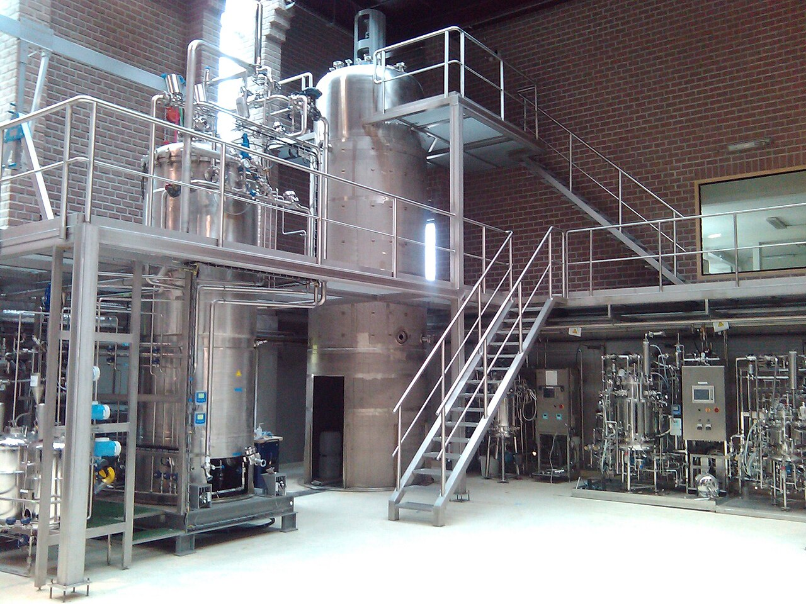
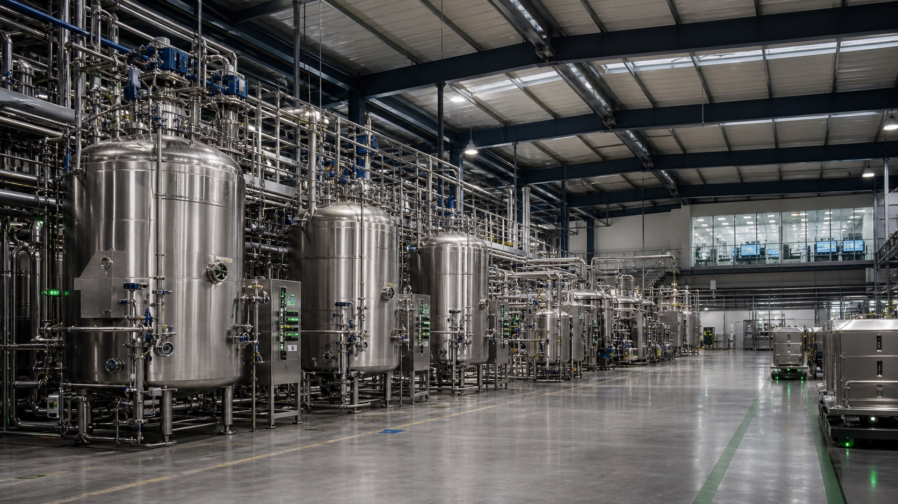
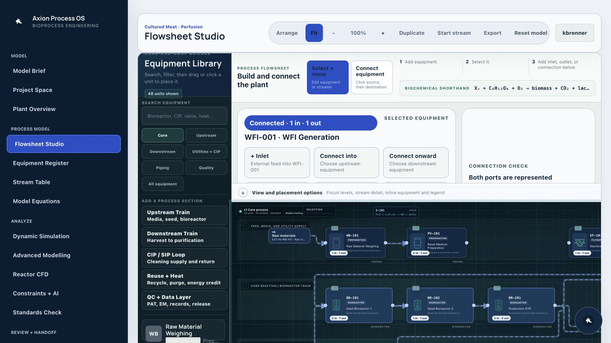
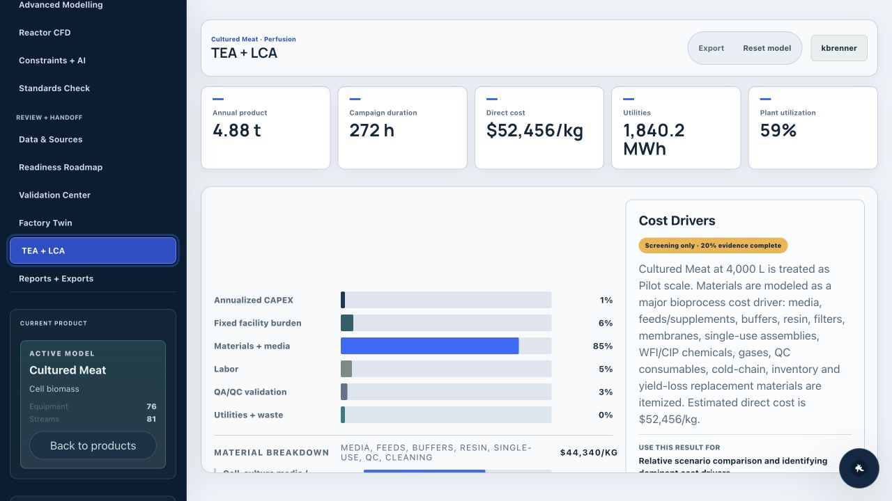
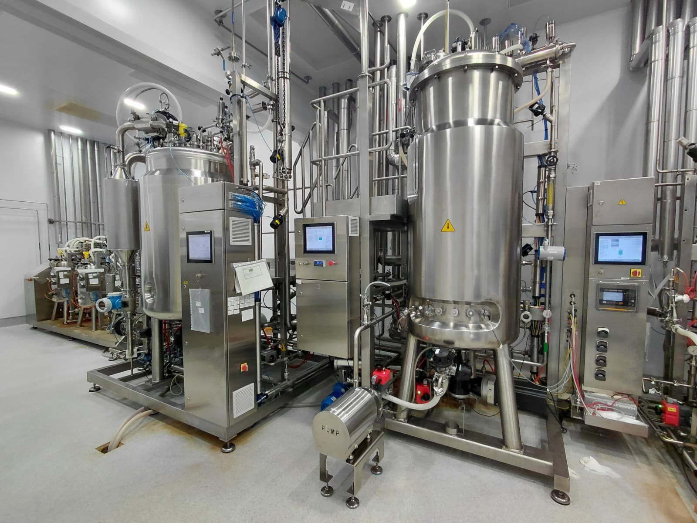
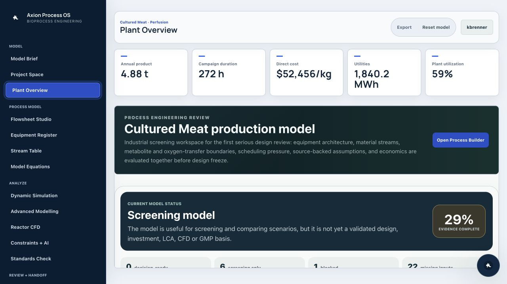
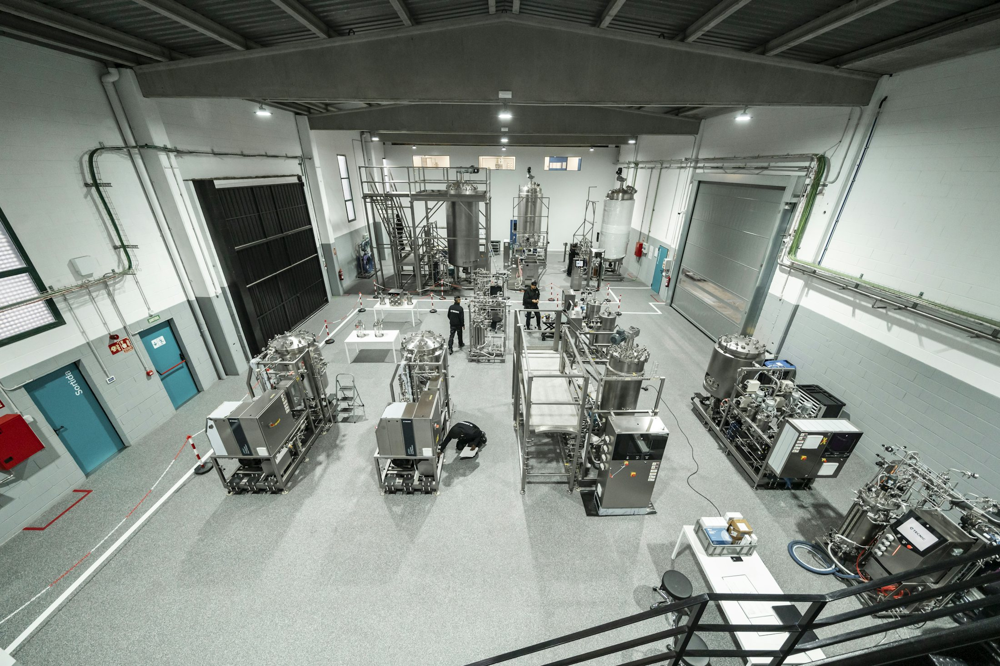
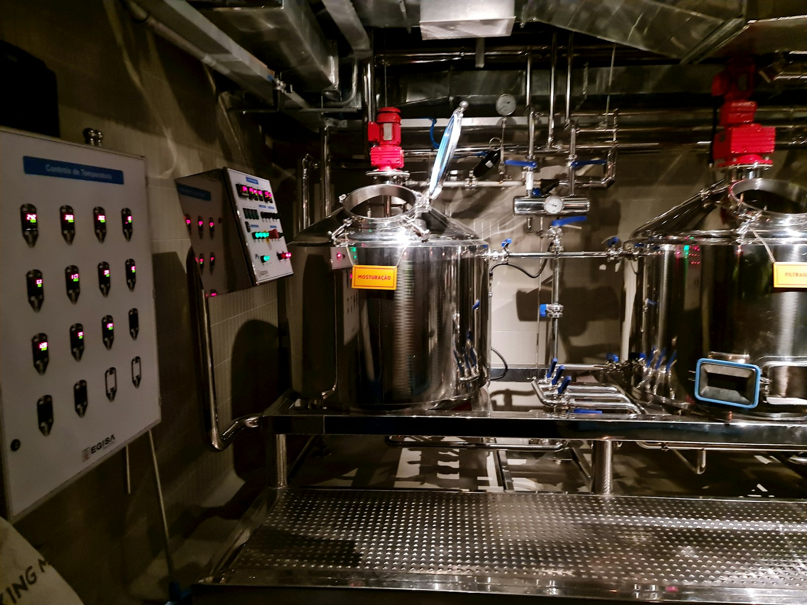
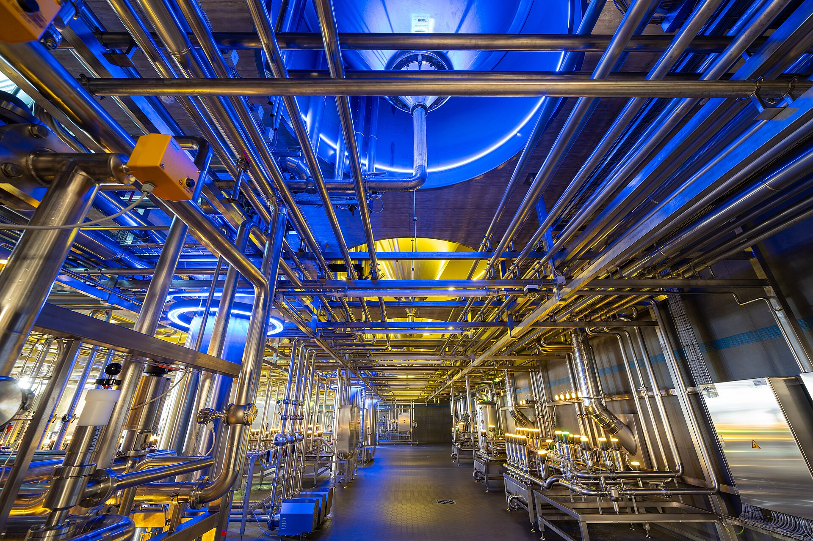

Industrial bioprocess engineering
Design the process.
Design the process.
Understand the plant.
Axion connects flowsheets, simulation, scheduling, scale-up, TEA and LCA in one traceable engineering workspace.
Live pilot
Follow one process from media to final product.
Switch the operating mode and watch streams, equipment loading and plant outputs update together.
Monoclonal antibody · fed-batchIllustrative engineering model
Institutions and programs connected to the founder's academic path. No customer endorsement is implied.
Built for the teams that turn biology into production.
One governed model for process development, manufacturing engineering and plant-level decisions.Process development + MSAT
Build batch, fed-batch, perfusion and continuous routes. Test kinetics, feeds, oxygen transfer, recovery and scale-up limits.
Manufacturing + plant engineering
Plan campaigns, equipment reuse, CIP/SIP, utilities, operators, bottlenecks, heat recovery and facility fit.
TEA + LCA teams
Quantify materials, media, COGS, CAPEX, water, energy, emissions, uncertainty, NPV and sensitivity.

One model from flowsheet to decision.
Build the plant, inspect the evidence and export the complete engineering handoff.

Describe. Build. Refine.
A single, reviewable path from process brief to engineering decision.- 01
Describe the product
Define biology, scale, quality target, facility context, and available company data.
- 02
Build the production system
Connect equipment, streams, utilities, cleaning, recycle, schedules, and controls.
- 03
Refine the decision
Resolve balances, ODE/PDE dynamics, physical boundaries, capacity, economics, and environmental impact.
Bring one real process decision.
Start with your product, process data and the question your team needs to answer.Platform
From product brief to editable plant model.
Production trains, utilities, cleaning, logistics and operating constraints remain part of one engineering model.
Edit equipment, streams, utilities, cleaning loops and operating assumptions in one workspace.
Natural-language process brief
Start with penicillin, cultured meat, antibodies, fermentation, vaccines, plasmids, cell therapy, water, or emissions. Axion maps the brief to a process architecture.
Flowsheet + equipment builder
Drag equipment, connect animated streams, add CIP/SIP, recycle, heat reuse, utilities, valves, sensors, QC nodes, and support infrastructure.
Models, equations, and downloads
Work with mass and energy balances, chemical equations, stream tables, parameters, economics, standards, LCA inventories, TEA cost drivers, and downloadable CSV/SVG datasets.
AI-assisted engineering
Ask what blocks oxygen transfer, ammonium control, media cost, scale-up, cleaning, heat recovery, or facility readiness, then jump to the right tool module.
10,000 L mAb fed-batch model
Generates seed train, production STR, harvest, depth filtration, Protein A, low-pH viral inactivation, polishing, UF/DF, fill, QC release, CIP/SIP, mass balance, LCA inventory, and TEA cost stack.
Cultured meat perfusion plant
Shows media preparation, seed expansion, perfusion bioreactor, cell-retention, harvest wash, formulation, packaging, ammonia and lactate boundaries, heat reuse, wastewater, and water-reuse loops.
Penicillin fermentation route
Builds sterile media, aerobic fermentation, cell removal, extraction, solvent recycle, crystallization, drying, emissions, hazardous solvent checks, route scheduling, and downstream yield sensitivity.
Keep existing simulator work
Import or reconstruct one representative process, validate mass balance and economics, then evaluate scenarios collaboratively in the browser.
Versions, branches, comments
Shared projects, roles, invitations, audit history, model versions, process alternatives, and comparison-ready decision records.
REST, Python, webhooks
JSON process model, API handoffs, cloud batch runs, parameter sweeps, Monte Carlo cases, and LIMS/historian/ERP connectors.
Dynamic plant intelligence
Time-dependent cell growth, metabolites, live plant data, calibration, soft sensors, anomaly checks, and online prediction roadmap.
Native risk analysis
Sensitivity, Sobol-style ranking, probabilistic costs, uncertainty bands, parameter fitting, and scenario comparison without spreadsheet add-ins.
Transparent COGS + CAPEX
Regional cost indices, vendor quotes, CAPEX ranges, media and consumables, NPV/IRR/break-even, cash runway, and key cost drivers.
High-demand biopharma example
Therapeutic monoclonal antibody production, built as a guided product demo.
Axion uses an original CHO monoclonal-antibody platform process as the front-page walkthrough because it touches the full problem: upstream cell culture, downstream purification, viral safety, scheduling, economics, LCA, quality, and scale-up physics.
Example basis
Based on common CHO/mAb platform process structure and general bioprocess-engineering practice. Axion is not copying proprietary simulator files; it demonstrates an original, editable workflow around this process type.
Workflow
A technical operating layer for process design.

Equipment occupancy, transfers, cleaning, utilities, maintenance and release steps become visible in one workflow.
Reuse equipment, expose bottlenecks and compare operating scenarios before committing industrial capacity.

“Reduce media cost by 20%”
Open parameters, lower media intensity, test titer/recovery tradeoffs, inspect ammonium/osmolality warnings, compare direct cost, then download TEA-ready CSV for the new scenario.
“Can I scale this reactor?”
Jump to CFD, check kLa/OTR margin, mixing time, gas hold-up, shear and dead zones, then return to Process Builder to split the reactor into parallel scale-out trains.
“Prepare an LCA handoff”
Use streams and reports to export water, WFI, media, chemicals, utilities, waste, emissions, per-batch values, annual values, per-kg values, and screening CO2e factors.
Solutions by role and sector
One model, configured for the decision your team owns.

Process, operations, utilities, logistics, quality, TEA and LCA teams work from the same site architecture.
Company data, APIs, historians and supplier evidence enrich the same traceable asset model.
Engineering and process-design teams
For conceptual design, CAPEX/OPEX, facility fit, utilities, scheduling, debottlenecking, and client scenario review across many projects.
Biopharma, CDMO, and MSAT
For mAbs, vaccines, cell and gene therapy, viral vectors, biologics, tech transfer, COGS, capacity planning, and site-standardized models.
Food, fermentation, and alternative proteins
For cultivated meat, precision fermentation, enzymes, ingredients, food processing, media cost, downstream recovery, utilities, and sustainability.
Scientific reference layer
Attach papers, supplier data, standards, assumptions, and SOP notes directly to units, streams, parameters, and scale-up decisions.
Integration layer
Model CSV uploads, historian data, OPC UA, SCADA, sensor streams, batch records, and source-backed parameter updates.
Review layer
Use structured recommendations to see what still has to be added before a full production simulation is defensible.
SCADA / historian handoff
Map DO, pH, temperature, airflow, agitation, pressure, feed mass and conductivity tags to live digital-twin variables and compare them with the model envelope.
Supplier quote review
Attach bioreactor, filter, resin, membrane, CIP skid and clean-utility assumptions to CAPEX/OPEX rows so TEA reviewers can replace screening factors with quoted values.
Equation-oriented high-fidelity modelling
Diagnose model structure, fit experiments, quantify uncertainty, optimize constrained decisions, reconcile live states, and solve distributed transport from one connected workbench.
Security and governance
Keep engineering work private, traceable and reviewable.
Axion structures process data, model changes and evidence so teams can understand who changed what, why it changed and which decisions still require qualified approval.Plant assumptions, source data, responsibilities and review state stay connected to the engineering model.
Separate screening estimates from calibrated data and decision-ready results.
Private project ownership
Projects, uploaded company data, collaborators and exports are kept inside authenticated workspaces with explicit ownership.
Versioned model history
Branches, versions, change records and before/after comparisons make process decisions easier to review and reverse.
Source-backed assumptions
Parameters can carry source, unit, confidence and validation status, keeping literature, supplier evidence and site data distinguishable.
Qualified engineering review
Axion supports technical evaluation; regulated, safety-critical and investment decisions remain subject to the customer's approved procedures and qualified reviewers.
Enterprise requirements
Discuss access, data handling and validation scope before a pilot.
SuperPro Designer alternative
Compare Axion Process OS with a classical process-simulation workflow.
Axion connects flowsheets, engineering evidence, operational planning, and team decisions in a browser workspace. It can sit alongside validated desktop simulators while teams evaluate and migrate selected workflows.Start with a representative company-owned process and validate balances, economics and equipment assumptions in parallel.
Branches, review context, APIs and connected outputs make engineering decisions easier to reproduce.
For teams evaluating a SuperPro Designer alternative
Keep the calculation work you trust. Modernize how the team works around it.
Start with one representative, customer-owned process. Reconstruct or import permitted data, validate mass balance and economics in parallel, then compare speed, traceability, and collaboration before expanding the scope.
Capability
Axion Process OS
Classical desktop workflow
Access and collaboration
Browser workspace, shared projects, roles, comments, branches, versions, and audit history.
Often desktop- and file-centred, with collaboration managed outside the model.
Process model
Editable plant canvas linked to streams, balances, schedules, evidence, economics, LCA, and exports.
Mature unit-operation calculations and established process-design workflows.
Integration
JSON model, REST APIs, Python jobs, webhooks, company-data ingestion, and connector registry.
Typically desktop automation, files, spreadsheets, or vendor-specific interfaces.
Decision workflow
Before/after model changes, traceable assumptions, scenario branches, TEA/LCA, and review-ready exports.
Strong calculations, with decision records and review context commonly maintained separately.
Deployment
Browser access designed for shared projects, without a Windows desktop installation for each modeller.
SuperPro Designer officially supports Windows 10 and 11 and uses fixed, floating, or corporate licensing.
Automation
Structured JSON model, REST endpoints, Python jobs, webhooks, data upload, and connector workflows.
SuperPro supports desktop automation through VBA and C# via its COM interface.
The engineering model must become a shared team system.
- Several disciplines need to review the same process basis.
- Branches, versions, comments, evidence, and before/after changes matter.
- Scheduling, TEA, LCA, plant data, and model readiness must stay connected.
- Browser access and API-first integration are part of the requirement.
An established calculation package is already qualified for the decision.
- The existing unit-operation model and validation basis already meet the project need.
- Regulated decisions depend on a controlled, approved legacy workflow.
- The required equipment, thermodynamics, or reaction model is not yet validated in Axion.
- Migration would add risk without improving collaboration or decision quality.
What teams ask before changing process-modelling software.
Is Axion Process OS a direct replacement for SuperPro Designer?
Axion is a browser-first engineering workspace with native flowsheets, balances, dynamic models, scheduling, CFD screening, TEA/LCA, versions, data ingestion, and exports. A technical pilot should compare one customer-owned reference process before any validated workflow is replaced.
Can Axion import existing SuperPro Designer files?
Axion does not copy or decode proprietary model formats. Teams can reconstruct an authorized reference process from their own stream tables, equipment data, assumptions, and exported results, then reconcile the new model against the approved baseline.
Who should evaluate Axion?
Process-development, MSAT, manufacturing, plant-engineering, CDMO, TEA/LCA, food-biotech, fermentation, and technical-consulting teams that need collaboration, traceability, scenario comparison, and connected engineering outputs.
How should a technical comparison be run?
Select one representative process and define acceptance criteria for mass balance, equipment duty, schedule, economics, exports, change traceability, and missing evidence. Keep the existing tool as the reference until differences are explained and approved.
Responsible migration
Axion uses original implementations, public scientific knowledge, and data that customers are authorized to use. It does not copy proprietary manuals, model libraries, or restricted simulator files. SuperPro Designer is a trademark of its respective owner; the comparison is independent and based on publicly documented product capabilities.
Open migration benchmarkSource basis for competitor facts: official SuperPro Designer overview and official feature documentation, reviewed August 2026.
Bioprocess simulation software
Model the process, the equipment, and the decision in one system.
Axion connects component balances, reactions, ODE/PDE dynamics, operating modes, equipment duties, physical limits, scheduling, uncertainty, and economics without separating the flowsheet from its evidence.BatchFed-batchPerfusionContinuousHybrid trains
Process basis
Components, reactions, yields, kinetics, feeds, harvest logic, recycle, cleaning, operating mode, working volume, and scale.
Engineering model
Mass and energy balances, equipment duty, ODE/PDE states, oxygen transfer, heat removal, physical boundaries, and uncertainty.
Review outputs
Throughput, bottlenecks, sensitivities, cost, environmental burden, model validity, missing evidence, and detailed exports.
QuestionAxion outputEvidence required
Can the process scale?Operating envelope and scale-up gapsKinetics, kLa, mixing, heat, rheology, geometry
Does the route close?Component balance and residual diagnosticsStream assays, yields, hold-up, losses, recycle
Which scenario wins?Before/after comparison with sensitivitiesRanges, source ownership, validation criteria
Biomanufacturing scheduling software
Prove what the complete facility can actually produce.
Build a finite-capacity campaign schedule across reactors, downstream assets, rooms, operators, inventories, utilities, CIP/SIP, maintenance, holds, release, and changeovers.Seed BR-101Culture
Production BR-201Fed-batch
Harvest CF-301Harvest
CIP-901Shared CIP
Equipment states
Setup, processing, transfer, waiting, cleaning, sterilization, maintenance, and available states.
Shared resources
Rooms, labor, utilities, skids, tanks, storage, QC queues, and transfer paths.
Capacity
Occupancy, cycle time, feasible batches, lateness, WIP, utilization, and bottlenecks.
What-if plans
Parallel capacity, campaign sequence, cleaning reduction, outsourcing, and demand changes.

Bioprocess TEA + LCA software
Trace every cost and impact back to the process assumption.
Axion links media, materials, consumables, labor, utilities, equipment, facility, waste, emissions, yields, schedules, and uncertainty to transparent long-form decision datasets.Materials first
Media, feeds, buffers, resins, filters, single-use assemblies, solvents, packaging, and waste handling.
Facility reality
Equipment, installation, piping, controls, clean utilities, rooms, indirects, contingency, region, and escalation.
Inventory depth
Mass, energy, water, waste, transport, consumables, direct emissions, allocation, and impact factors.
Intervals
Low/base/high cases, Monte Carlo-ready tables, sensitivity rankings, break-even, NPV, IRR, and dominant drivers.
Analyst-ready exportsAssumption register · stream inventory · equipment cost basis · labor model · utility ledger · waste ledger · annual cash flow · LCA inventory · sensitivity matrix · source register
Review disciplineEach value carries units, scenario, range, source type, owner, date, confidence, validity domain, and the output decisions it influences.

Biopharma process simulation
Connect upstream, downstream, facility fit, and COGS.
Evaluate mAbs, recombinant proteins, vaccines, and advanced biologics with an explicit seed train, production mode, harvest, purification, viral safety, formulation, filling, utilities, cleaning, release, and evidence model.Media + bufferSeed trainProduction BRHarvestCaptureViral safetyPolishingUF/DF + fill
Scale and mode
Fed-batch versus perfusion, viable-cell density, titer, OUR, kLa, feeds, metabolites, bleed, and harvest logic.
Capacity and yield
Clarification, filters, chromatography cycles, pool tanks, buffers, hold times, viral clearance, UF/DF, and formulation.
Fit and transfer
Campaign scheduling, reusable assets, CIP/SIP, single-use changeover, rooms, WFI, clean steam, QC, and release.
Fermentation process modelling
Design aerobic fermentation around oxygen, heat, recovery, and cost.
Evaluate precision fermentation, enzymes, food ingredients, biomass, and industrial biotechnology from raw-material preparation through seed, production, recovery, concentration, drying, utilities, recycle, wastewater, TEA, and LCA.Kinetics
Biomass, substrate, product, oxygen, carbon dioxide, maintenance, inhibition, by-products, and variable yields.
Scale-up
OUR/OTR, kLa, power per volume, tip speed, gas flow, pressure, heat removal, viscosity, foam, and working volume.
DSP route
Cell removal, disruption, extraction, membrane steps, chromatography, evaporation, crystallization, and drying.
Economics
Feedstock and media, productivity, recovery yield, energy, wastewater, labor, utilization, CAPEX, and uncertainty.
SuperPro Designer migration
Benchmark one authorized model before changing your workflow.
Keep the existing approved model as the baseline. Reconstruct one representative process from customer-owned exports and assumptions, reconcile the results, and evaluate collaboration, traceability, scenario speed, and decision outputs.Choose one representative, company-owned process and freeze the reference outputs.
Map permitted streams, equipment, operations, costs, schedule, and source assumptions.
Explain differences in balances, duties, occupancy, economics, and environmental results.
Measure variant speed, review effort, traceability, exports, and collaboration.
Expand only the workflows that pass predefined technical and governance criteria.
Migration assessment
Define the comparison before sharing any process data.
This request collects contact and evaluation scope only. Do not submit confidential process files through this form.Independent comparison. SuperPro Designer is a trademark of its respective owner. Axion does not copy proprietary files, manuals, or restricted model libraries.
Engineering resources
Build a process model that can survive technical review.
Practical templates and focused guides for process development, MSAT, plant engineering, scheduling, TEA, and LCA teams. No registration is required for the downloads.Bioprocess model readiness checklist
Check the minimum evidence behind balances, kinetics, equipment sizing, cleaning, scheduling, utilities, TEA, LCA, controls, and model validation.
Download CSVProduction data request template
Structure historian tags, batch records, laboratory results, equipment data, material costs, utility meters, and source ownership before import.
Download CSVAcceptance criteria template
Define balance closure, schedule fidelity, equipment duty, sensitivity, economics, sustainability, traceability, and export requirements before a pilot starts.
Download CSVHigh-intent technical guides
Choose the engineering question you need to answer.
From flowsheet to dynamic operating envelope
Connect component balances, reactions, ODE/PDE kinetics, batch and perfusion modes, equipment duties, physical limits, and uncertainty in one reviewable model.
- Use for scale-up, route comparison, and process characterization.
- Validate against measured kinetics, mass closure, and an approved reference case.
Model the complete facility, not one isolated batch
Schedule shared reactors, chromatography skids, hold vessels, utilities, rooms, operators, CIP/SIP, maintenance, release, and campaign changeovers.
- Use for capacity planning, facility fit, and debottlenecking.
- Review occupancy, wait states, WIP, and achievable annual throughput.
Make the economic and environmental basis auditable
Trace media, buffers, consumables, labor, utilities, waste, equipment, facility, yield, titer, and utilization through intervals and sensitivity results.
- Use for investment, process selection, and sustainability review.
- Export long-form datasets for analysts instead of relying on dashboard totals.
Use-case library
Start from a real production decision.
Axion Engineering Brief
One useful technical note, not a generic newsletter.
Receive new model templates, validation checklists, engineering guides, and release notes. You can request removal at any time through the privacy contact.Technical pilot
Start with one real process decision.
Bring a company-owned process, dataset, or scale-up question. Axion will structure the flowsheet, identify the required evidence, and define a focused evaluation before a subscription decision.Pricing
Monthly access for serious process engineering.
Choose the level of engineering evidence, collaboration, and governance the decision requires. Every commercial plan is priced for professional process work, not as a limited calculator.
Monthly billingChange or cancel from the billing portal.
Credit or debit cardSecurely processed through Stripe Checkout.
InvoiceAvailable for Team, Site, and private contracts.
Research
For an individual researcher building source-backed process studies.
€149 / month 1 named seat · billed monthly- Flowsheet, simulation and equations
- Private research projects
- Academic engineering exports
- Scientific source library
Professional
For a process engineer comparing complete design and scale-up decisions.
€590 / month 1 named seat · billed monthly- Full equipment and process library
- Balances, ODE/PDE, CFD and scheduling
- TEA, LCA and sensitivity analysis
- Decision package with evidence gaps
- Excel, SVG, CSV and complete ZIP exports
Engineering Team
For multidisciplinary teams reviewing, branching, and approving shared models.
€2,490 / month 5 named seats · billed monthly- Everything in Professional
- Collaboration, invites and comments
- Branches, versions and audit trail
- Shared model libraries and reports
Enterprise Site
For governed site-wide modelling, company data integration, and deployment.
€6,900 / month 20 named seats · billed monthly- Everything in Engineering Team
- Company data and API connectors
- Enterprise identity and governance
- Priority onboarding and support
Private deployment
Validated models, dedicated infrastructure, and implementation.
For organizations that need private-cloud or on-premise deployment, customer-specific model calibration, validation protocols, enterprise integration, and engineering support.
From €12,500 / month
Scope, infrastructure, validation, and support agreed for the deployment.
Prices exclude applicable VAT. Compute-heavy validated CFD and private deployment infrastructure may be scoped separately.
Payment FAQ
Simple monthly access.
How does payment work?
Research and Professional subscriptions use secure Stripe Checkout. Credit and debit cards are processed by Stripe, and Axion activates access only after the subscription is confirmed. Team, Site, and private contracts can also be billed by invoice.
Which payment methods are available?
Self-service subscriptions accept eligible credit and debit cards through Stripe Checkout. Invoice billing is available for Team, Site, and private contracts after the billing contact and company details have been confirmed. Stripe is the payment processor, not a separate customer payment method.
Can I cancel or update the payment method?
Yes. Active customers can open the Stripe customer portal from their profile to manage payment methods, invoices, and cancellation.
Is VAT included?
No. Displayed prices exclude applicable VAT. Stripe collects billing address and tax ID details so the configured tax treatment can be applied.
When does access start?
Immediately after verified payment. The checkout return confirms the subscription and opens the licensed workspace automatically.
Do validated CFD or private deployments cost extra?
They can. Dedicated infrastructure, customer-specific calibration, validation work, and external CFD compute are scoped separately because the required effort and compute vary by project.
Frequently asked questions
Clear answers for process and engineering teams.
What Axion models, where evidence comes from, how subscriptions work, and what still needs qualified validation.Product and fit
Who Axion is for and the decisions it supports.
What is Axion Process OS?
Axion is a browser-based bioprocess engineering workspace. It connects process flowsheets, mass and energy balances, dynamic models, facility scheduling, CFD screening, TEA, LCA, source evidence, versions, and exports around one project model.
Which teams receive the most value?
Process development uses it to design and scale routes; MSAT and manufacturing use it for tech transfer, scheduling and capacity; plant engineering uses it for equipment, utilities and facility concepts; TEA and LCA teams use the same process basis for cost and environmental decisions.
Which processes are supported?
Batch, fed-batch, perfusion, continuous, and hybrid architectures can be applied to fermentation, cultivated products, biopharma, enzymes, alternative proteins, food processing, and related industrial biotechnology routes.
Can Axion be evaluated alongside an existing simulator?
Yes. Use a customer-owned reference process, define acceptance tolerances, reconstruct the authorized process basis, and compare balances, schedules, economics, exports, and collaboration workflows before migrating any validated work.
Models and evidence
What is calculated and how results should be reviewed.
What is included in the engineering output?
The combined package includes the PFD, stream table, equipment register, mass and energy balances, reactions, parameters, ODE/PDE profiles, scheduling, utilization, TEA, LCA, uncertainty, sensitivity, sources, open boundaries, and missing validation tasks.
Does Axion support advanced equation-oriented modelling?
Yes. The modelling workbench checks degrees of freedom and initial conditions, executes operating procedures and events, fits parameters to experiments, runs Monte Carlo sensitivity, optimizes constrained decisions, reconciles online states, builds surrogate design spaces, and inspects distributed PDE domains.
How accurate are the calculations?
Accuracy depends on model structure, inputs, calibration, and evidence. Axion records low, base, and high values, units, sources, confidence, and validation state so screening results are not presented as validated plant predictions.
Is the CFD view a validated CFD solver?
The in-app view is an interactive engineering screen for geometry, boundary conditions, transport risks, and external job preparation. Validated three-dimensional CFD requires a verified mesh, numerical settings, material models, convergence evidence, and an external CFD worker such as OpenFOAM.
Does Axion replace engineering judgment?
No. It makes assumptions, dependencies, consequences, and missing evidence visible. Qualified engineers remain responsible for safety, GMP, regulatory, equipment, validation, and investment decisions.
Data, collaboration, and access
How projects become company-specific and controlled.
Can companies upload their own production data?
Yes. Projects accept company-owned CSV and JSON data such as historian series, batch records, assays, recipes, schedules, utilities, TEA/LCA inventories, and supplier quotes. Mapping and preview steps show what changes before data is applied.
Can several people work on one model?
Team plans support projects, collaborators, invitations, branches, saved versions, comparisons, and audit records so changes can be reviewed and earlier states reopened.
How are payments handled?
Monthly subscriptions use Stripe-hosted Checkout. Stripe handles payment credentials; Axion stores the customer, contract, plan, entitlement, and verified subscription status required to control access.
How do we start without committing to a rollout?
Request a technical pilot for one process and one decision. The pilot defines inputs, model scope, outputs, acceptance criteria, and remaining validation work before a subscription or enterprise deployment.
Next step
Bring one process and one decision question.
Axion will show the required data, the modelling route, and the evidence still missing.
Legal
Provider information, privacy, and terms.
neunzigzehn UG
Franz-Joseph-Straße 1180801 München
Deutschland
- Vertreten durch
- Lukas Höcherl, Geschäftsführer
- Registergericht
- Amtsgericht München
- Handelsregister
- HRB 301734
- Legal Entity Identifier
- 984500DQ5DB7BC6D9154
Company data remains project data.
Account, billing, project, uploaded-data, and audit records are processed to operate the service. Production deployments should use configured database, storage, identity, and deletion policies. Secrets and payment-card details must never be stored in the browser model.
Engineering support, not an automatic validation claim.
Axion supports design and screening decisions. Users remain responsible for reviewing model assumptions, safety, GMP, regulatory, equipment, and investment decisions with qualified experts and validated data.
Monthly workspace access.
Paid access renews monthly until cancelled. Billing, invoices, payment methods, and cancellation are handled through secure Stripe-hosted pages when production billing is configured.
Brand system
One precise mark. One industrial identity.
Download the official Axion logo variants and use the same color, typography, and spacing system across product, reports, presentations, and partnerships.
Primary mark
Aquatic form. Industrial precision.
The streamlined side-profile axolotl is the product mark. Navy and white is the default expression; Cobalt and Reactor Amber are controlled accents.
Download primary SVGSVG library
Choose the version for its background.


Corporate colors
Deep engineering tones with one bright signal.
#071D33Foundation#316BFFInteraction#6F8FB0Evidence#F2B441Emphasis#D95D58Critical only#EEF3F8CanvasManrope + DM Mono
Manrope carries product and company communication. DM Mono is reserved for equipment tags, equations, units, versions, and technical metadata.
Navy first, accents second
Cobalt indicates interaction. Process Steel carries neutral engineering evidence. Amber marks attention. Coral appears only for errors or safety-critical states.
Let the mark breathe
Keep one body-height around the mark. Never stretch, rotate, outline, shadow, or animate individual parts of the aquatic silhouette.
Access Axion